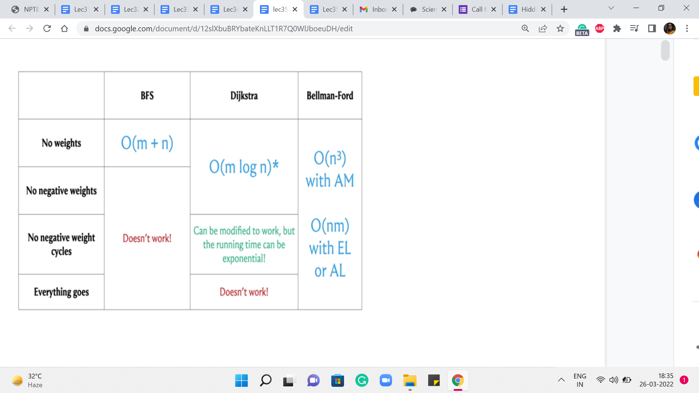
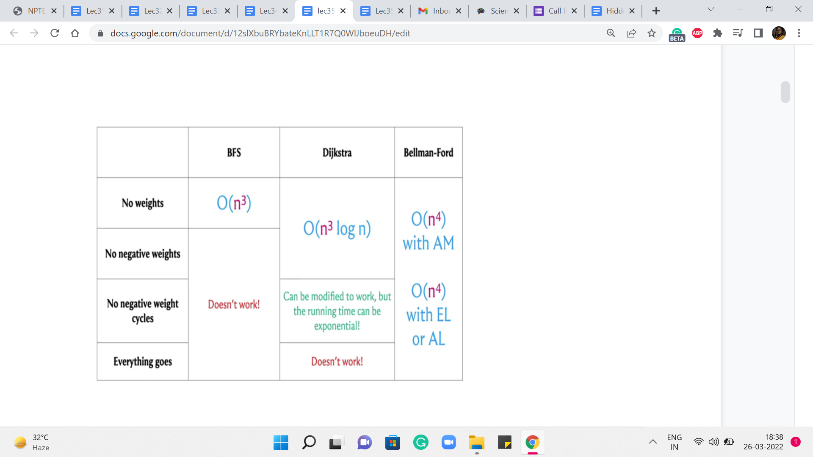
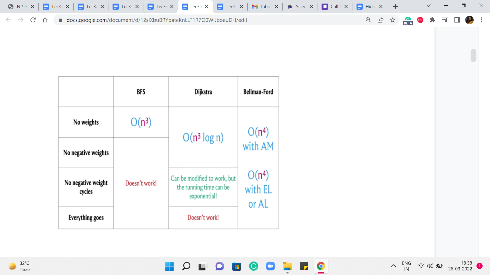
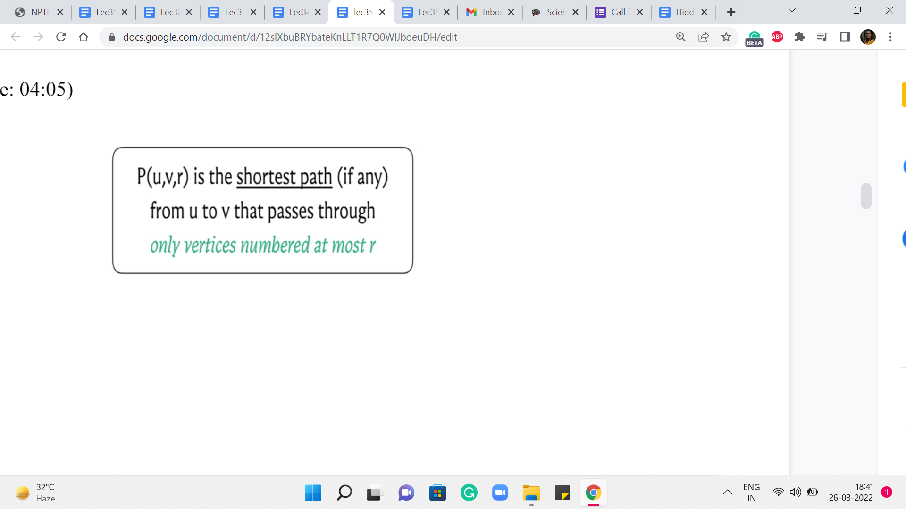
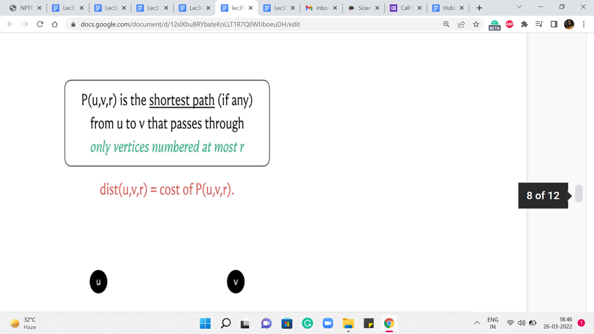
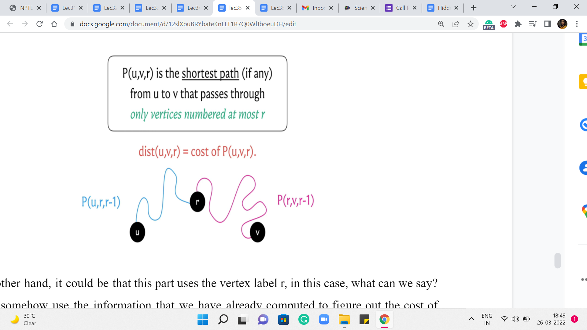

M 3 (APSP [Floyd-Warshall] | Page Hopping)
Lecture - 35
Shortest Paths - Module 3 (APSP [Floyd-Warshall] | Page Hopping)
Welcome to the third and the final module of the sixth week in Getting Started with Competitive Programming. So, far in this week, we have focused completely on the single-source shortest path problem in various scenarios ranging from unweighted graphs all the way to general edge rates, both positive, negative, and even the presence of negative cycles.
Now in this final module, I want to introduce you to a different variant of the shortest path problem, called the All Pairs Shortest Path Problem, or APSP, for short. And we are going to see an algorithm for this, that popularly goes by the name Floyd Warshall. And are we going to implement this in the context of a problem called ‘page hopping,’ which appeared in the ICPC world finals way back in 2000!
(Refer Slide Time: 01:05)

 
 


So, let us get started with the problem itself. So, we are trying to tackle all-pairs shortest paths. As usual, will assume that we are working with a directed and a weighted graph. And our goal, in this case, is to compute the shortest paths between every pair of vertices. Now, having worked so much on SSSP, which is ‘single-source shortest path,’ I think a very natural reaction is to say, well, what is the big deal? We just run SSSP from every vertex, and this way, we will end up calculating the length of the shortest paths between any pair of vertices. And that would be absolutely correct. Let us take a look at the SSSP algorithms that we have seen so far.
And let us try to understand: What would be the running time of the APSP algorithm if we were to simply run these SSSP algorithms ‘n’ times? So, as you might guess, to obtain these running times, we simply have to add a multiplicative factor of n to the existing running times to account for this outer for loop, that is going to run n times.
Now, let us consider these running times for the case when the number of edges is as bad as it can be. And let us say that it is a dense graph, the number of edges is roughly n squared. In that case, these running times end up looking like this. And you can see that it is only the case when we have no weights at all, that we get an n3 running time, which is what we obtained by running BFS n times.
But in everything else, we have something that is worse than n cubed. So, a natural question is if we can do all-pairs shortest paths in order n cubed time without having to worry about the extra log n factor in the case of Dijkstra or the extra factor of n that comes in, in Bellman-Ford. So, perhaps we can just try to figure this out.
For non-negative edge weights, just getting an improvement over Dijkstra, I think that would be pretty nice. And in fact, what we are going to see, well, we will describe it in the context of graphs that do not have negative edge weights. But you can adapt it. And I think it is a good exercise to do that, to also account for negative weight cycles. So let us go ahead and take a look at what the algorithm does.
So, as always, I will describe the mechanics of the algorithm without giving you formal proof of correctness. But hopefully, there will be enough intuition for it to be clear as to why you might expect it to work. And, as always, in case you have not seen this algorithm or its proof of correctness before, but you are curious, you can always look up the references given in the description of this video to find out more. Okay. So, in this algorithm, what we are going to do is, again, work in phases, much like Bellman-Ford.
(Refer Slide Time: 04:05 & 05:44)
 
So, we are going to go through n phases, and at the end of the ’r’th phase, what are we hoping to do? We are hoping to track the cost of the shortest path from u to v that uses vertices that are numbered, at most r. So let us imagine that our vertices are labeled from 1 to n. And, in the ’r’th step, I am restricting you to only use vertices that are labeled with a number that is r or less. Now, notice that when r = n, this means that any vertex is fair game because all vertex labels are at most n any way. So, if you are able to figure out the values of P(u,v,r) correctly for every pair u v and for every value of r, then at the very end what we have is exactly what we are looking for.
Now you might ask: Why are we slicing this in terms of these r’s? And this, basically, is a fundamental idea, which is to break down what you ultimately want into smaller digestible chunks. And we will see a lot more of this flavor of algorithm play out in the last three weeks of the scores when we work with the concept of dynamic programming.
However, if you have not worked with dynamic programming-based algorithms before, do not worry about it. This description is going to be fairly self-contained. And you are going to feel right at home, as long as you have seen recursion, which you already have, even in the context of this course. So, I think this should be pretty easy to follow along with.
So, let us use the distance array to keep track of the costs of these paths that we have defined here. So, in particular, the distance u v r value is going to reflect the cost of the path that goes from u to v using vertices that are labeled at most r. And such paths may not even exist. In that case, these distance values are to be interpreted as being infinity.
And in your code, that is just going to be a very large number. Okay. So, let us think about how do we compute these values? Well, one easy case is when r = 0. Can you think about what the value of distance u v 0 should be, given that vertices are labeled from 1 to n? Alright. So, if vertices are labeled from 1 to n, then we are saying: compute the length of the shortest path from u to v, which passes only through vertices numbered at most 0.
Now there are no vertices numbered at most 0. So, this is just a twisted way of saying that you are not allowed to use any intermediate vertices. And notice that the only parts that do not use intermediate vertices are the direct edges. So, the distance of u v 0 is going to be the weight of the edge from u to v, if such an edge is available. And if such an edge is not available, then this distance just remains infinity.
So, that is what we have in what do you might think of as some sort of a base case for this recursion. Okay. So, we figured out what to do if r = 0. Now let us think about what should happen in a more general setting.
(Refer Slide Time: 07:29)
 
So, here are the vertices u and v. And we are trying to figure out the value for distance u v r. Now, just like we do in an inductive proof, we are going to assume that we already have figured out the values of distance u v r prime, for r prime strictly < r. We can assume that this is true because, well, in general, we have figured it out for r = 0.
And we are going to build our way upwards, step by step. So, if I tell you how to compute distance u v r, provided you already know distance u v r prime, for r prime < r, then you can use this mechanism to go from distance u v 0 to distance u v 1, and from distance u v 1 to distance u v 2, and so on all the way till the end.
So, just like we do in a proof by induction, my focus here will be on trying to explain how we compute distance u v r under the assumption that you already know the correct values for distance u v r prime, for r prime < r. So, hopefully, that makes sense. And now let us come back to the question that we were posing earlier.
How do we compute distance u v r? Well, we are trying to figure out what is the best path from u to v that uses vertices that are labeled at most r if such a path exists. Now, if such a path exists, there could be two possible scenarios. The first is that it uses the vertex labeled r. And the other is that it does not use the vertex label r.
Well, if it does not use the vertex label r, and originally, all of the vertices on this path were supposed to have labels at most r, given that we are not using the vertex r, this path must in fact be a path where all the vertex labels are at most r-1. So, in this case, what can we say? Take a moment here and think about how you would compute distance u v r, if I told you that P(u,v,r), in fact, happens to not need the vertex labeled r. Okay. So, in this situation, P(u,v,r) is going to in fact be the same as P(u,v,r-1), because this path simply does not make use of the vertex r.
So, r best bet is to just borrow the knowledge that we have from the ’r-1’th phase. So, this is the best that we can do, if we assume that this path from u to v in the ’r’th phase, in fact, happens to not need the vertex labeled r.
(Refer Slide Time: 10:19)

On the other hand, it could be that this part uses the vertex label r. In this case, what can we say? Can we somehow use the information that we have already computed to figure out the cost of this path? Remember that the vertex r has already been used. So, the question is what can we say about the paths that go from u to r and from r to v. Just think about breaking it down in that way.
And, you know, take a pause, think about this and come back when you are ready. So, as I was hinting earlier, let us try and think about the path from u to r, and the path from r to v. What can we say about these paths? Well, we have assumed non-negative edge weights. So, we know that our shortest paths, the optimal ones, are also simple paths. So they are not going to really repeat any vertices. And in particular, they are not going to repeat the vertex r.
So, we know that the blue and the pink sub-paths – excluding the end vertices, which are u and r and r and v respectively – these paths only use vertices labeled at most r-1 as the intermediate nodes. For this reason, we know that the length or the costs of these paths respectively is given by values that we have already computed, namely, P(u,r,r-1), and P(r,v,r-1). So, we simply sum these two values to get to the cost of the path from u to v.
Now, you might say that each of these two cases makes sense individually. But how do we figure out which case we are in? What do we know about the best part in the ’r’th phase, we do not really know if it uses the vertex r or not. Well, we do not know this. But we can anticipate this by pretending that we are in one case or the other. And trying to figure out the values that we just calculated here, comparing the two and taking the minimum. That will give us the right answer at the end of the ’r’th phase.
(Refer Slide Time: 12:35)

So, let us summarize whatever we have said with this our case analysis. So, we are trying to figure out the distance value for u v r, and the first thing that we said was the base case. So, we said that if r is equal to 0, this is the weight of the edge from u to v. And this is written succinctly. It is to be interpreted as the weight of this edge if it exists, and infinity otherwise.
Now in the next generic step, what we want to do is to compare these two situations. The first is when the path from u to v, the optimal path, which is supposed to restrict itself to labels at most r, happens to not care for the vertex labeled r. In this case, the answer is going to simply be the distance of u v r-1. But on the other hand, suppose it does use the vertex r, then you can split this path into two sub-paths – the one that goes from u to r, and the other that goes from r to v. And other costs of these paths, notice that they are only going to use vertices whose labels at most r-1 because as we just discussed, vertices are not going to repeat because we do not have negative edge weights so all optimal paths are simple.
So, just combining the weights of these two sub-paths, we have this expression here. Now, as we said a moment ago, we do not know which of these two cases we are in, so we just compare the values and take the minimum of the two knowing that is the best that we could have hoped for at this stage.
Now, this calculation here translates beautifully into just four lines of code. You essentially have three nested loops. The outermost loop essentially goes through all of these phases r, and the two inner loops essentially work through u,v pairs. Now inside these nested loops, you have one line computation that simply handles the update for u v r. And at that point, you are done. So, we are going to look at this implementation but in the context of the page hopping problem, and I am going to take that to the next segment. So, I will see you there!